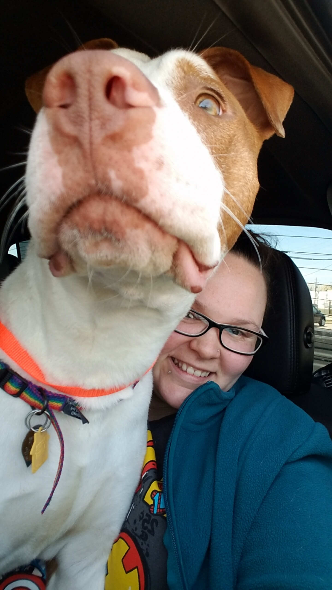
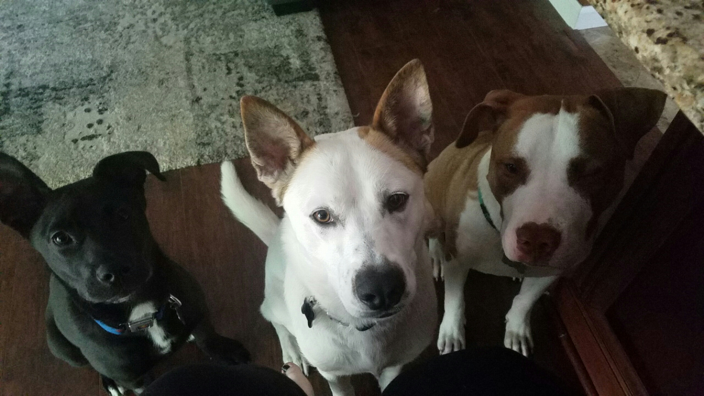

They look great on TV
I had lived in St. Louis a year and half when I decided I needed a dog, even though I was worried
about the being woken up early with being licked in the face part that I had seen all dogs do on
tv. I’m from a very small town and never had any real pets before when I was younger. I had just
moved in with my best friend Dani, as had her boyfriend, Dane, who had a male dog named Cali,
while I saved for my first house. I had done my research on dogs of different breeds for a few
months and thought I had the ideal dog in mind. I didn’t want a puppy, especially with never
having had a dog before. I didn’t know how to train a dog! I wanted a dog that got along with
other dogs, loved children, didn’t chew up everything, didn’t shed a lot, and was potty trained.
That’s when I decided I wanted a two-year old, potty trained, female Staffordshire Terrier,
preferably a blue one. I had lived with my cousin who had a female Pitbull and she listened so
well and loved her kids. I just knew that’s what type of dog I wanted. So I started my quest to
find the perfect dog.
Looking for love
I found lots of dogs but none that even came close to my criteria. All the shelters I went to
either the dog was dog aggressive, older than 6, hated children, or was 12 weeks old. I looked
on pet finder, and craigslist, and rescues, and everywhere I could think of to look. While looking,
my best friend actually fell in love with a dog that I had found. He was a 4 or 5-month-old black
puppy named Biscotti. I went with her to the humane society to look at him but it said he was
unavailable on his door. She went to find out why he was unavailable when online showed him available
and get information on him. I walked around looking at the other dogs while I waited, there was some
really cute ones but none that I thought would be a good match on Biscotti’s row. I went to the next
row and started down it.
Love at first sight
Halfway down the next row, I stopped dead in my tracks. His picture on his door was so adorable and
his name was Boots. What a horrid name I thought, that’s a cat’s name! I looked in the pin and he looked
so lonely. I fed him few pieces of dog food out of the little box on the wall and he was so gentle. He
didn’t look how I imagined my perfect dog would, and he was a boy. I took out his information and read
that he wasn’t potty trained, was only 6 or 7 months old, and had been given up by his family, who had
abused him. I decided right there that he needed to come home with me. Dani came up to me and said that
Biscotti was sick and that’s why he was unavailable so he couldn’t be adopted until he wasn’t sick for
24 hours. I told her about Boots and ended up adopting him and bringing him home that day. 
New name for a new life
Luckily, he didn’t know his name. I looked up boy names that started with the letter B thinking that it
would help him progress to a new name more easily. I said a few differently boy names out loud, testing
them out but he just ignored me and continued to play with Cali. "Bentley. Oh, that’s cute," I said out
loud. Boots stopped playing and looked at me. I waited for him to start playing again and said the name
out loud again, "Bentley". He stopped playing and looked at me again. I said another name and he
continued to play. I said Bentley a third time and he came over to me. So, he went from Boots to Bentley.
Bentley Thomas more specifically, everyone needs a middle name. Two days after I adopted Bentley, Dani
went back to the shelter and adopted Biscotti. In two days we went from three humans and one dog, to
three humans and three dogs. Luckily with all three of our work schedules, the dogs were almost never
alone. Biscotti and Bentley were instant best friends and still are to this day when we get them
together, since we have our house and dont live with them any longer. 
Click Me to learn about Bentley!
Click Me to see additional pictures!